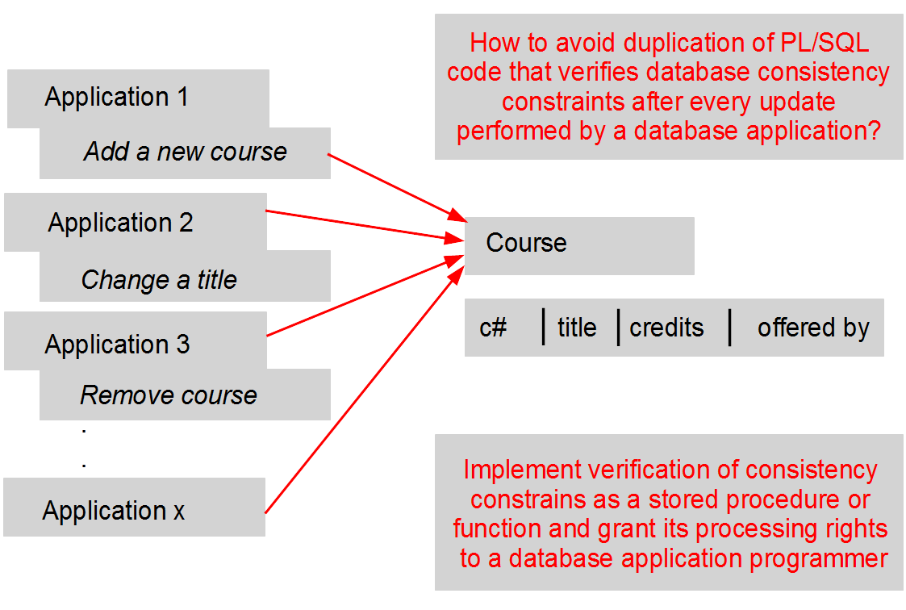

DEPARTMENT NAME | LIST OF COURSES OFFERED -------------------------------------------------------- Math | Calculus Topology Logic Algebra Comp Sci | Python Java Databases Biol | Phys | Relativity Mechanics Astro | Astrology
SELECT dname, LCOURSES( dname ) FROM DEPARTMENT;
CREATE OR REPLACE PROCEDURE INSERT_COURSE( cnumber IN NUMBER,
ctitle IN VARCHAR,
ccredits IN NUMBER,
coffer IN VARCHAR) IS
BEGIN INSERT INTO COURSE VALUES( cnumber, UPPER(ctitle), ccredits, UPPER(coffer) ); COMMIT; END INSERT_COURSE;
EXECUTE INSERT_COURSE(666, 'Java for kids', 6, 'Comp Sci');
CREATE OR REPLACE FUNCTION LCOURSES( dept_name VARCHAR ) RETURN VARCHAR IS
course_list VARCHAR(300); BEGIN course_list := '';
FOR course_cur_rec IN (SELECT title FROM COURSE WHERE offered_by = dept_name);
LOOP
course_list := course_list || course_cur_rec.title || ' ';
END LOOP;
RETURN course_list; END LCOURSES;
SELECT dname, LCOURSES( dname ) FROM COURSE;
GRANT EXECUTE ON INSERT_COURSE TO janusz;
EXECUTE scott.INSERT_COURSE(958, 'Multimedia Databases', 6, 'Comp Sci');